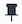
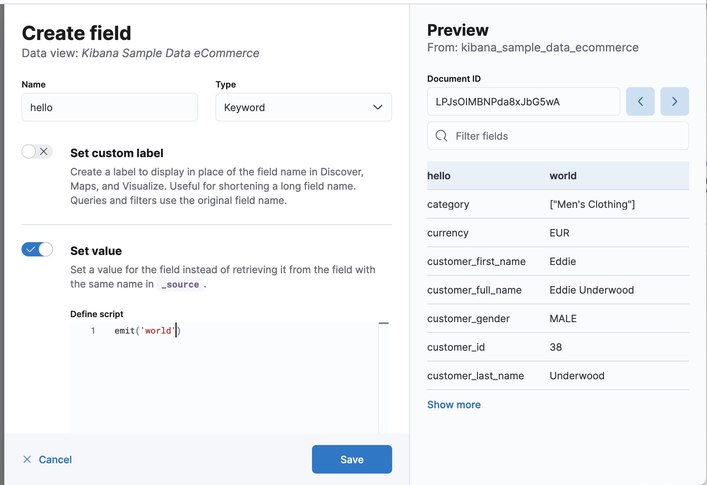
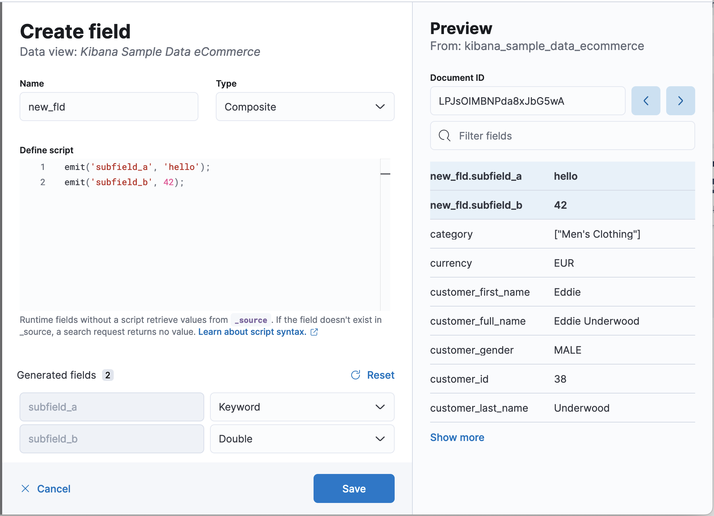

Manage data views
editTo customize the data fields in your data view, you can add runtime fields to the existing documents, add scripted fields to compute data on the fly, and change how Kibana displays the data fields.
Explore your data with runtime fields
editRuntime fields are fields that you add to documents after you’ve ingested your data, and are evaluated at query time. With runtime fields, you allow for a smaller index and faster ingest time so that you can use less resources and reduce your operating costs. You can use runtime fields anywhere data views are used, for example, you can explore runtime fields in Discover and create visualizations with runtime fields for your dashboard.
With runtime fields, you can:
- Define fields for a specific use case without modifying the underlying schema.
- Override the returned values from index fields.
- Start working on your data without understanding the structure.
- Add fields to existing documents without reindexing your data.
Runtime fields can impact Kibana performance. When you run a query, Elasticsearch uses the fields you index first to shorten the response time.
Index the fields that you commonly search for and filter on, such as timestamp, then use runtime fields to limit the number of fields Elasticsearch uses to calculate values.
For detailed information on how to use runtime fields with Elasticsearch, refer to Runtime fields.
Add runtime fields
editTo add runtime fields to your data views, open the data view you want to change, then define the field values by emitting a single value using the Painless scripting language. You can also add runtime fields in Discover and Lens.
- Open the main menu, then click Stack Management > Data Views.
- Select the data view that you want to add the runtime field to, then click Add field.
- Enter the field Name, then select the Type.
- Select Set custom label, then enter the label you want to display where the data view is used, such as Discover.
- Select Set value, then define the script. The script must match the Type, or the data view fails anywhere it is used.
-
To help you define the script, use the Preview:
- To view the other available fields, use the Document ID arrows.
- To filter the fields list, enter the keyword in Filter fields.
- To pin frequently used fields to the top of the list, hover over the field, then click .
- Click Create field.
Runtime field examples
editTry the runtime field examples on your own using the Sample web logs data.
Return a keyword value
editReturn Hello World!:
emit("Hello World!");

Perform a calculation on a single field
editCalculate kilobytes from bytes:
emit(doc['bytes'].value / 1024)
Return a substring
editReturn the string that appears after the last slash in the URL:
def path = doc["url.keyword"].value;
if (path != null) {
int lastSlashIndex = path.lastIndexOf('/');
if (lastSlashIndex > 0) {
emit(path.substring(lastSlashIndex+1));
return;
}
}
emit("");
Return multiple fields with a composite runtime field
editA single runtime field can also produce multiple subfields when the type Composite is selected. The script editor provides default types that can be customized for each subfields.
Return keyword and double type subfields. Note that the first argument for emit is the name of the subfield.
emit('subfield_a', 'Hello');
emit('subfield_b', 42);

Replace nulls with blanks
editReplace null values with None:
def source = doc['referer'].value;
if (source != null) {
emit(source);
return;
}
else {
emit("None");
}
Specify the operating system condition:
def source = doc['machine.os.keyword'].value;
if (source != "") {
emit(source);
}
else {
emit("None");
}
Manage runtime fields
editEdit the settings for runtime fields, or remove runtime fields from data views.
- Open the main menu, then click Stack Management > Data Views.
- Select the data view that contains the runtime field you want to manage, then open the runtime field edit options or delete the runtime field.
Add scripted fields to data views
editDeprecated in 7.13.
Use runtime fields instead of scripted fields. Runtime fields support Painless scripts and provide greater flexibility.
Scripted fields compute data on the fly from the data in your Elasticsearch indices. The data is shown on the Discover tab as part of the document data, and you can use scripted fields in your visualizations. You query scripted fields with the Kibana query language, and can filter them using the filter bar. The scripted field values are computed at query time, so they aren’t indexed and cannot be searched using the Kibana default query language.
Computing data on the fly with scripted fields can be very resource intensive and can have a direct impact on Kibana performance. Keep in mind that there’s no built-in validation of a scripted field. If your scripts are buggy, you’ll get exceptions whenever you try to view the dynamically generated data.
When you define a scripted field in Kibana, you have a choice of the Lucene expressions or the Painless scripting language.
You can reference any single value numeric field in your expressions, for example:
doc['field_name'].value
For more information on scripted fields and additional examples, refer to Using Painless in Kibana scripted fields
Create scripted fields
editCreate and add scripted fields to your data views.
- Open the main menu, then click Stack Management > Data Views.
- Select the data view you want to add a scripted field to.
- Select the Scripted fields tab, then click Add scripted field.
- Enter a Name for the scripted field, then enter the Script you want to use to compute a value on the fly from your index data.
- Click Create field.
For more information about scripted fields in Elasticsearch, refer to Scripting.
Manage scripted fields
edit- Open the main menu, then click Stack Management > Data Views.
- Select the data view that contains the scripted field you want to manage.
- Select the Scripted fields tab, then open the scripted field edit options or delete the scripted field.
Built-in validation is unsupported for scripted fields. When your scripts contain errors, you receive exceptions when you view the dynamically generated data.
Format data fields
editKibana uses the same field types as Elasticsearch, however, some Elasticsearch field types are unsupported in Kibana. To customize how Kibana displays data fields, use the formatting options.
- Open the main menu, then click Stack Management > Data Views.
- Click the data view that contains the field you want to change.
- Find the field, then open the edit options ().
- Select Set custom label, then enter a Custom label for the field.
- Select Set format, then enter the Format for the field.
For numeric fields the default field formatters are based on the meta.unit field. The unit is associated with a time unit, percent, or byte. The convention for percents is to use value 1 to mean 100%.
String field formatters
editString fields support String and Url formatters.
The String field formatter enables you to apply transforms to the field.
Supported transformations include:
- Convert to lowercase
- Convert to uppercase
- Convert to title case
-
Apply the short dots transformation, which replaces the content before the
.character with the first character of the content. For example:
|
Original |
Becomes |
|
|
|
You can specify the following types to the Url field formatter:
- Link — Converts the contents of the field into an URL. You can specify the width and height of the image, while keeping the aspect ratio. When the image is smaller than the specified parameters, the image is unable to upscale.
- Image — Specifies the image directory.
- Audio — Specify the audio directory.
To customize URL field formats, use templates. An URL template enables you to add values
to a partial URL. To add the contents of the field to a fixed URL, use the {{value}} string.
For example, when:
- A field contains a user ID
-
A field uses the
Urlfield formatter -
The URI template is
http://company.net/profiles?user_id={{value}}
The resulting URL replaces {{value}} with the user ID from the field.
The {{value}} template string URL-encodes the contents of the field. When a field encoded into a URL contains
non-ASCII characters, the characters are replaced with a % character and the appropriate hexadecimal code. For
example, field contents users/admin result in the URL template adding users%2Fadmin.
When the formatter type is Image, the {{value}} template string specifies the name of an image at the
specified URI.
When the formatter type is Audio, the {{value}} template string specifies the name of an audio file at the specified URI.
To pass unescaped values directly to the URL, use the {{rawValue}} string.
A Label template enables you to specify a text string that appears instead of the raw URL. You can use the
{{value}} template string normally in label templates. You can also use the {{url}} template string to display
the formatted URL.
Date field formatters
editDate fields support Date, String, and Url formatters.
The Date formatter enables you to choose the display format of date stamps using the moment.js standard format definitions.
The String field formatter enables you to apply transforms to the field.
Supported transformations include:
- Convert to lowercase
- Convert to uppercase
- Convert to title case
-
Apply the short dots transformation, which replaces the content before the
.character with the first character of the content. For example:
|
Original |
Becomes |
|
|
|
You can specify the following types to the Url field formatter:
- Link — Converts the contents of the field into an URL. You can specify the width and height of the image, while keeping the aspect ratio. When the image is smaller than the specified parameters, the image is unable to upscale.
- Image — Specifies the image directory.
- Audio — Specify the audio directory.
To customize URL field formats, use templates. An URL template enables you to add values
to a partial URL. To add the contents of the field to a fixed URL, use the {{value}} string.
For example, when:
- A field contains a user ID
-
A field uses the
Urlfield formatter -
The URI template is
http://company.net/profiles?user_id={{value}}
The resulting URL replaces {{value}} with the user ID from the field.
The {{value}} template string URL-encodes the contents of the field. When a field encoded into a URL contains
non-ASCII characters, the characters are replaced with a % character and the appropriate hexadecimal code. For
example, field contents users/admin result in the URL template adding users%2Fadmin.
When the formatter type is Image, the {{value}} template string specifies the name of an image at the
specified URI.
When the formatter type is Audio, the {{value}} template string specifies the name of an audio file at the specified URI.
To pass unescaped values directly to the URL, use the {{rawValue}} string.
A Label template enables you to specify a text string that appears instead of the raw URL. You can use the
{{value}} template string normally in label templates. You can also use the {{url}} template string to display
the formatted URL.
Geographic point field formatters
editGeographic point fields support the String formatter.
The String field formatter enables you to apply transforms to the field.
Supported transformations include:
- Convert to lowercase
- Convert to uppercase
- Convert to title case
-
Apply the short dots transformation, which replaces the content before the
.character with the first character of the content. For example:
|
Original |
Becomes |
|
|
|
Number field formatters
editNumeric fields support Bytes, Color, Duration, Histogram, Number, Percentage, String, and Url formatters.
The Bytes, Number, and Percentage formatters enable you to choose the display formats of numbers in the field using the Elastic numeral pattern syntax that Kibana maintains.
The Histogram formatter is used only for the histogram field type. When you use the Histogram formatter, you can apply the Bytes, Number, or Percentage format to aggregated data.
You can specify the following types to the Url field formatter:
- Link — Converts the contents of the field into an URL. You can specify the width and height of the image, while keeping the aspect ratio. When the image is smaller than the specified parameters, the image is unable to upscale.
- Image — Specifies the image directory.
- Audio — Specify the audio directory.
To customize URL field formats, use templates. An URL template enables you to add values
to a partial URL. To add the contents of the field to a fixed URL, use the {{value}} string.
For example, when:
- A field contains a user ID
-
A field uses the
Urlfield formatter -
The URI template is
http://company.net/profiles?user_id={{value}}
The resulting URL replaces {{value}} with the user ID from the field.
The {{value}} template string URL-encodes the contents of the field. When a field encoded into a URL contains
non-ASCII characters, the characters are replaced with a % character and the appropriate hexadecimal code. For
example, field contents users/admin result in the URL template adding users%2Fadmin.
When the formatter type is Image, the {{value}} template string specifies the name of an image at the
specified URI.
When the formatter type is Audio, the {{value}} template string specifies the name of an audio file at the specified URI.
To pass unescaped values directly to the URL, use the {{rawValue}} string.
A Label template enables you to specify a text string that appears instead of the raw URL. You can use the
{{value}} template string normally in label templates. You can also use the {{url}} template string to display
the formatted URL.
The String field formatter enables you to apply transforms to the field.
Supported transformations include:
- Convert to lowercase
- Convert to uppercase
- Convert to title case
-
Apply the short dots transformation, which replaces the content before the
.character with the first character of the content. For example:
|
Original |
Becomes |
|
|
|
The Duration field formatter displays the numeric value of a field in the following increments:
- Picoseconds
- Nanoseconds
- Microseconds
- Milliseconds
- Seconds
- Minutes
- Hours
- Days
- Weeks
- Months
- Years
You can specify these increments with up to 20 decimal places for input and output formats.
The Color field formatter enables you to specify colors with ranges of values for a number field.
When you select the Color formatter, click Add Color, then specify the Range, Text color, and Background color.